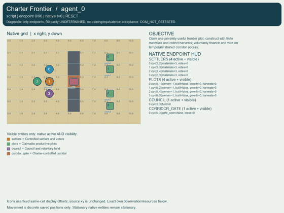
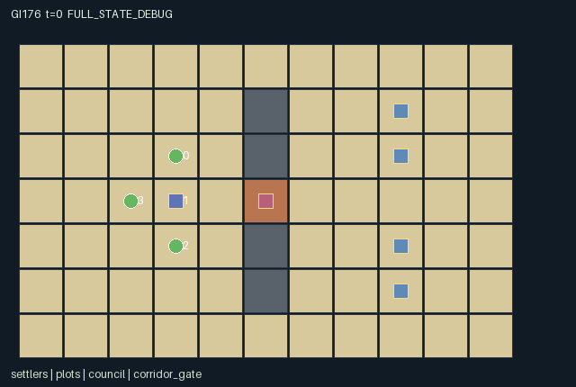

GI176 / SPATIAL
边境章程
角色出资并投票开放临时走廊；关键赞成票经过延迟才转化为伙伴的进门权。
Original saved demonstration
Recorded native state, often authored scripts or interventions; information scope and failures are preserved in the original provenance. This is a saved demonstration, not live browser play.

Release verification episode
Untrained uniform legal actions. Actual JAX state sampled along the full original episode; full-state debug camera. No human performance or learning claim.

Run this game
crucibles play --game 176
Start Python locally, then open the address printed by the terminal. Installation, multiplayer, takeover and keyboard controls →
Objective, rewards & ending
Exact task contract
{
"objective": "Claim one privately useful frontier plot, construct with finite materials and collect harvests; voluntarily finance and vote on temporary shared corridor access.",
"natural_termination": "All four plots have two collected harvests. H=96 otherwise truncates. No vote outcome is treated as task success.",
"interaction": "Two contributed materials fund a four-tick ballot. Three yes votes at its deadline cause a two-transition delay and then twelve ticks of gate entry rights. A single pivotal vote can therefore change a peer movement mask after a delay; expiry closes entry again.",
"observation_access": "Topology, positions, materials, claims, buildings, vote history, deadline, fund and gate timers are public. Only the observer own four-plot valuation vector is included; peer valuations and renderer attributes exclude them."
}Declared per-step reward bounds: -1.0 to 5.0. Observability: partially_observable.
Rules
- Move on public floor; walls block movement. The middle corridor gate allows entry only during an active charter; upper and lower detours remain open.
- Claim at most one plot from distance at most one; ties resolve by lower actor index, then lower plot index. Build there for two materials.
- Buildings mature automatically to three. An adjacent owner can collect a mature harvest; each plot needs two collections for joint completion.
- Donate one material voluntarily at the council. The public fund holds at most four; donations are not refunded. No agent is forced to donate.
- At the council, propose when at least two fund units exist and no ballot, delay or lease is active. Lowest-index proposer wins and starts with yes.
- Four subsequent ballot ticks permit remote public yes, no or abstain changes. Only at deadline do at least three yes votes spend two fund units.
- A passed charter waits two further transitions, then opens gate entry for twelve ticks. Expiry blocks new entry; an occupant may leave. No automatic eviction.
- No single veto rule exists: a no vote is not yes, and two non-yes votes defeat quorum. Failed ballots expire without spending fund.
Original mechanism document (historical status wording retained)
# Charter Frontier
Four controlled settlers share an 11 by 7 grid. The wall at x=5, y=1..5 contains one gate at (5,3); the always-open top and bottom rows are longer detours. The council is (3,3), and four claimable plots lie on the eastern frontier. Co-location, swaps and crossing are allowed. Every movement action is checked against the actual pre-step gate state. Closing a lease does not teleport or evict a settler on the gate: exit to a floor cell remains possible, while new gate entry is blocked.
Actions are 0 wait, 1 north, 2 east, 3 south, 4 west, 5 claim, 6 build, 7 harvest, 8 donate, 9 propose, 10 vote yes, 11 vote no, 12 abstain. Claim/build/harvest require Manhattan distance at most one from the relevant plot; a settler may own at most one plot. Unclaimed plots do not produce. Claims use ascending actor priority and the lowest-index eligible nearby plot. Construction costs two materials and makes a persistent building. Built plots gain one maturity per tick, capped at three, including the construction tick. A legal harvest requires mature pre-step crop, ownership and proximity; collection resets maturity and gives one harvest up to two.
Each settler starts with three materials. At council distance at most one, donation voluntarily moves one unit to a shared capacity-four fund. Lower actor index resolves the last free fund slot. Materials never regenerate; eight materials are needed to build all four plots, so donations compete with eventual private construction. No donation pledge is imposed on a non-consenting agent.
The sole governance mechanism is a temporary public corridor charter. A proposal requires council proximity, at least two existing fund units, and no active ballot, pending activation or lease. If several propose, the lowest-index proposer wins. Launch starts a four-tick ballot, clears old votes and records the proposer's yes. During each of the four subsequent ticks, every settler can independently change its public vote remotely to yes, no or abstain; unchanged votes persist. Evaluation happens only at the deadline, after that tick's vote updates. At least three yes votes and two available fund units ratify; two units are then consumed. Otherwise the ballot rejects without consuming fund. There is no privileged single-person veto; abstention and no both fail to contribute to quorum, while their distinct public signals persist until changed or next launch.
Ratification sets a two-transition activation delay. After those two further raw transitions, the gate has a twelve-tick lease. Movement on the activation transition still uses the pre-step closed mask; entry is available from the next observation/action boundary. The lease declines once per transition and expires naturally. Movement on the final open lease transition is legal, even if the resulting snapshot closes the gate. A new proposal can begin only after expiry and any new funding. Delay, ballot and lease are distinct state fields and level channels, not decorative animation timers.
Reset samples off-diagonal plot values in {1,2}, with own-index value three. Harvest rewards only the actual plot owner by its private value. Each material spent incurs 0.02; full harvest completion gives one to every settler. No reward is given merely for proposing, voting or opening. The intended tradeoff is private production/material conservation versus shorter shared access: one can take the detour, help fund a charter, support or block its quorum, time a crossing before expiry, or claim a different available plot. Other settlers' votes, contribution and timing change these choices. These strategic possibilities are untested source deductions.
The native observation includes public positions, map, materials, ownership, buildings, fund, votes, proposer and all public timers. Only own plot values appear. Settler sprites carry materials and vote attributes; plot sprites bind actual claims/buildings/crop; the barrier binds gate_open and lease; council binds real fund. Private values are not renderer attributes. Invariants include nonnegative materials/fund/growth/harvests/lease, one claim per settler, at most one owner per plot, finite original materials, vote values -1/0/1 and intended timer bounds. No unique-position invariant is asserted because co-location is legal.
The single-action paired hypothesis uses seed 17601 and literal prefix donations, proposal and one additional yes vote while settler 3 walks to the gate approach. The branch changes only settler 2's next action from wait to yes. Four identical wait transitions follow. The source predicts a difference in delayed gate entry availability to settler 3; it does not report a measured effect or completed run. Prospective quorum, costs, lease durations or frontier layouts are possible future task axes only under separately frozen protocols.
Status: AUTHORED_NOT_EXECUTED. All strategies, scripts and paired interventions are source-reasoned hypotheses. No successful replay, effect magnitude, learnability, reward gain, optimality, non-isomorphism or meta-RL transfer is claimed.
The source uses only JAX/JAX NumPy imports; it was never imported or called. The author ran only the supplied trusted stdlib AST whitelist and manifest/scene data validators, plus data-only hashes, state-key/action-range/one-action-difference checks. Shapes, dtypes, jit/vmap parity, numerical bounds, gameplay, rendering, legal script execution and terminal absorption require independent frozen-source integration.
All agents are controlled; there is no scripted teammate, pursuer, planner or oracle. Every step receives a joint action vector. Invalid/out-of-range/masked actions become wait. A live raw step increments t once. A terminal input preserves every state leaf and observation, returns zero rewards and true dones, and preserves causes. Natural completion takes priority over H=96 truncation. The outer wrapper must perform auto-reset.
Representation: counters, identifiers and inventories use int32; flags use bool; observations/rewards use float32. The external reset key is not duplicated in state. Stochasticity, where present, uses only that key. No design-required distribution was removed to satisfy the interface.
Provenance: only the 22 current closed inputs listed in author_input_freeze.json were read. The five official reference files were read as bytes for integrity only; their text/code was not semantically consulted, copied or executed. These are original game kernels, with no copied upstream code or incorporated upstream license text. Reference URLs remain input-bundle provenance. No prior candidates, selection/training outcomes, heldout inputs, network sources or external models were used. Adapters, real trajectories and animation belong to independent integration. New A/O/U contracts do not license reuse of old policy weights or two-player ranking statistics.
Literal source evidence:
- candidate.py:L68: `movement = inside & (tiles != 1) & ((tiles != 2) | state['gate_open'][0])`
- candidate.py:L75: `~jnp.any(own, axis=1) & jnp.any(nearby & (state['owner'][None, :] < 0), axis=1),`
- candidate.py:L110: `construct = (actions[i] == 6) & (materials[i] >= 2) & jnp.any(buildable)`
- candidate.py:L114: `contribute = (actions[i] == 8) & near_council[i] & (materials[i] > 0) & (fund < 4)`
- candidate.py:L131: `ratified = closing & (jnp.sum(votes == 1) >= 3) & (fund >= 2)`
- candidate.py:L139: `s['ballot_remaining'] = jnp.where(launch, 4, jnp.maximum(state['ballot_remaining'] - 1, 0))`
- candidate.py:L140: `fund = fund - 2 * ratified.astype(jnp.int32)`
- candidate.py:L144: `opened = state['pending'] == 1`
- candidate.py:L145: `lease = jnp.where(opened, 12, jnp.maximum(state['lease'][0] - 1, 0))`
- candidate.py:L146: `s['pending'] = jnp.where(ratified, 2, jnp.maximum(state['pending'] - 1, 0))`
- candidate.py:L153: `s['expired'] = (state['lease'][0] == 1) & ~opened`
- candidate.py:L162: `s['terminated'] = jnp.all(s['harvests'] >= 2)`
- candidate.py:L183: `return jnp.concatenate([jnp.eye(4, dtype=jnp.float32), state['private_value'] / 3.0,`
- candidate.py:L191: `next_state = jax.tree.map(lambda new, old: jnp.where(state['done'], old, new), proposed, state)`
Commands
Roles & abilities
agent_0 settler 0
agent_1 settler 1
agent_2 settler 2
agent_3 settler 3
Observation permissions
Training receives only the original observation rows. Role cameras use declared visibility; debug cameras are explicitly marked. Local benchmark records log debug exposure and role takeover history.
Exact observation layout
[
{
"slice": [
0,
4
],
"meaning": "Observer identity one-hot",
"visibility": "self"
},
{
"slice": [
4,
8
],
"meaning": "Own private values of four plots / 3; peer values absent",
"visibility": "self"
},
{
"slice": [
8,
9
],
"meaning": "Clock / 96",
"visibility": "public"
},
{
"slice": [
9,
86
],
"meaning": "Public row-major map / 2: floor 0, wall 0.5, charter gate 1",
"visibility": "public"
},
{
"slice": [
86,
94
],
"meaning": "Settler-major [x/10,y/6]",
"visibility": "public"
},
{
"slice": [
94,
98
],
"meaning": "Materials per settler / 3",
"visibility": "public"
},
{
"slice": [
98,
106
],
"meaning": "Plot-major [x/10,y/6]",
"visibility": "public"
},
{
"slice": [
106,
110
],
"meaning": "Plot owner code (owner+1)/4; 0 means unclaimed",
"visibility": "public"
},
{
"slice": [
110,
114
],
"meaning": "Building flags",
"visibility": "public"
},
{
"slice": [
114,
118
],
"meaning": "Crop maturity / 3",
"visibility": "public"
},
{
"slice": [
118,
122
],
"meaning": "Collected harvests / 2",
"visibility": "public"
},
{
"slice": [
122,
124
],
"meaning": "Council [x/10,y/6]",
"visibility": "public"
},
{
"slice": [
124,
126
],
"meaning": "Gate [x/10,y/6]",
"visibility": "public"
},
{
"slice": [
126,
127
],
"meaning": "Gate-open flag",
"visibility": "public"
},
{
"slice": [
127,
128
],
"meaning": "Lease timer / 12",
"visibility": "public"
},
{
"slice": [
128,
129
],
"meaning": "Fund / 4",
"visibility": "public"
},
{
"slice": [
129,
130
],
"meaning": "Ballot currently active",
"visibility": "public"
},
{
"slice": [
130,
131
],
"meaning": "Proposer code (proposer+1)/4; 0 means none",
"visibility": "public"
},
{
"slice": [
131,
132
],
"meaning": "Ballot remaining / 4",
"visibility": "public"
},
{
"slice": [
132,
136
],
"meaning": "Votes encoded (vote+1)/2: no=0, abstain=0.5, yes=1",
"visibility": "public"
},
{
"slice": [
136,
137
],
"meaning": "Pending delay / 2",
"visibility": "public"
},
{
"slice": [
137,
140
],
"meaning": "Joint done, natural termination, truncation",
"visibility": "public"
}
]Entity visibility & attributes
[
{
"id": "settlers",
"kind": "agent",
"count": 4,
"position": [
"agent_pos"
],
"active": [
"agent_active"
],
"visibility": [
"agent_visibility"
],
"attributes": [
{
"state_path": [
"materials"
],
"meaning": "Private inventory quantity, publicly visible",
"display": "number"
},
{
"state_path": [
"votes"
],
"meaning": "Public vote: -1 no, 0 abstain, 1 yes",
"display": "category"
}
]
},
{
"id": "plots",
"kind": "object",
"count": 4,
"position": [
"plot_pos"
],
"active": [
"plot_active"
],
"visibility": [
"plot_visibility"
],
"attributes": [
{
"state_path": [
"owner"
],
"meaning": "Claim owner; -1 means unclaimed",
"display": "category"
},
{
"state_path": [
"built"
],
"meaning": "Production building present",
"display": "flag"
},
{
"state_path": [
"growth"
],
"meaning": "Crop maturity",
"display": "bar"
},
{
"state_path": [
"harvests"
],
"meaning": "Collected harvests",
"display": "number"
}
]
},
{
"id": "council",
"kind": "landmark",
"count": 1,
"position": [
"council_pos"
],
"active": [
"council_active"
],
"visibility": [
"council_visibility"
],
"attributes": [
{
"state_path": [
"fund"
],
"meaning": "Voluntary communal material fund",
"display": "number"
}
]
},
{
"id": "corridor_gate",
"kind": "gate",
"count": 1,
"position": [
"gate_pos"
],
"active": [
"gate_active"
],
"visibility": [
"gate_visibility"
],
"attributes": [
{
"state_path": [
"gate_open"
],
"meaning": "Entry permitted by active charter",
"display": "flag"
},
{
"state_path": [
"lease"
],
"meaning": "Open-entry ticks remaining",
"display": "number"
}
]
}
]Actual verification & provenance
Per-game execution receipt
{
"game": "gi176",
"status": "PASS",
"verification_revision": 2,
"source_sha256": "f092787e54b527cb26a53ecbef4b71df7cdfa7312ad9197b165294c82d94f760",
"seed": 20261101,
"runtime": {
"jax": "0.4.38",
"numpy": "1.26.4",
"devices": [
"TFRT_CPU_0"
]
},
"dimensions": {
"num_agents": 4,
"observation_size": 140,
"num_actions": 13,
"max_steps": 96
},
"checks": {
"eager_reset": {
"status": "PASS",
"seconds": 1.8484516143798828
},
"observation_spaces_legal_masks": {
"status": "PASS",
"seconds": 2.1865227222442627
},
"eager_step": {
"status": "PASS",
"seconds": 2.0703036785125732
},
"jit_reset": {
"status": "PASS",
"seconds": 0.36165571212768555
},
"jit_step": {
"status": "PASS",
"seconds": 0.9301748275756836
},
"eager_jit_integer_parity_float_measurement": {
"status": "PASS",
"seconds": 0.00099945068359375
},
"jit_vmap_reset": {
"status": "PASS",
"seconds": 0.506561279296875
},
"jit_vmap_step": {
"status": "PASS",
"seconds": 1.9608399868011475
},
"outer_autoreset_api": {
"status": "PASS",
"seconds": 1.475407600402832
},
"full_original_horizon_episode_and_render": {
"status": "PASS",
"seconds": 2.412585735321045
}
},
"human_scores": null,
"browser_controls": "PENDING",
"failures": [],
"elapsed_seconds": 14.56254267692566,
"float_parity_max_abs": 5.960464477539063e-08,
"numerical_parity": "UNDETERMINED_NONZERO_FLOAT_DIFFERENCE",
"raw_terminal_absorbing": "PASS",
"terminal_outer_reset": "PASS",
"episode_steps": 96,
"scripted_random_returns": [
-0.03999999910593033,
-0.05999999865889549,
0.0,
0.0
],
"terminal": true,
"demo_information": "FULL_STATE_DEBUG",
"demo_frames": 25,
"render_roles_checked": 4
}Chromium control verification
{
"game": "gi176",
"status": "PASS",
"human_scores": null,
"engineering": true,
"checks": [
"catalog_selected_and_real_native_reset",
"keyboard_native_direction_command",
"dom_queue_and_native_step",
"second_participant_ownership_and_native_joint_step",
"all_roles_individually_controllable_no_role_cap",
"explicit_debug_camera",
"release_to_pure_ai_without_reset",
"close_session_preserves_log"
],
"ui_sha256": "96243f9de144b80b5e20a114330e2206bdcd58d3efc9c6f13bbc08b95cacc14d",
"keyboard_action_id": 1,
"seconds": 5.524437189102173
}Original identity and file hashes
{
"id": 176,
"key": "gi176",
"title": "边境章程",
"summary": "角色出资并投票开放临时走廊；关键赞成票经过延迟才转化为伙伴的进门权。",
"tags": [
"集体决策",
"延迟通行权"
],
"family": "spatial",
"dimensions": {
"num_agents": 4,
"observation_size": 140,
"num_actions": 13,
"max_steps": 96
},
"source_sha256": "f092787e54b527cb26a53ecbef4b71df7cdfa7312ad9197b165294c82d94f760",
"manifest_sha256": "cf6341d81c81652dd5a6493268d048da174bd4a51e3394c3f905b9ac8afe7f9f",
"files": [
{
"file": "candidate.py",
"sha256": "f092787e54b527cb26a53ecbef4b71df7cdfa7312ad9197b165294c82d94f760",
"bytes": 11147,
"origin": "work/exp_2/game_incubator_v3/community_games222_225_visualization_root222_v1/native154_candidate/registry/v2/games/game-v3-00176/candidate.py"
},
{
"file": "manifest.json",
"sha256": "cf6341d81c81652dd5a6493268d048da174bd4a51e3394c3f905b9ac8afe7f9f",
"bytes": 16069,
"origin": "work/exp_2/game_incubator_v3/community_games222_225_visualization_root222_v1/native154_candidate/registry/v2/games/game-v3-00176/manifest.json"
},
{
"file": "scene.json",
"sha256": "044203d3de3995ac301ef77da2dc5bcc3c920db059d809b136d0b080a665e93f",
"bytes": 9711,
"origin": "work/exp_2/game_incubator_v3/community_games222_225_visualization_root222_v1/native154_candidate/registry/v2/games/game-v3-00176/scene.json"
},
{
"file": "mechanism.md",
"sha256": "66deeaec54ae8a671cf462d9154cecd019474a2254026ca2a1a819819a3dbeee",
"bytes": 8215,
"origin": "work/exp_2/game_incubator_v3/sources/game-v3-00176/attempt_00/mechanism.md"
},
{
"file": "playthrough.json",
"sha256": "4ed5465b2aad5c02625948e7598cedc02010c5d3b199b0158ef37542ee504832",
"bytes": 3705,
"origin": "work/exp_2/game_incubator_v3/sources/game-v3-00176/attempt_00/playthrough.json"
}
],
"original_status": "NATIVE154_REFERENCE",
"original_saved_replay": true,
"release_validation": "PASS",
"human_scores": null,
"browser_validation": "PASS"
}